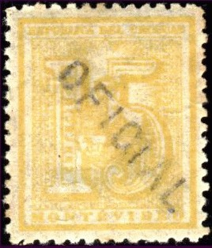
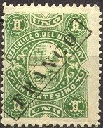
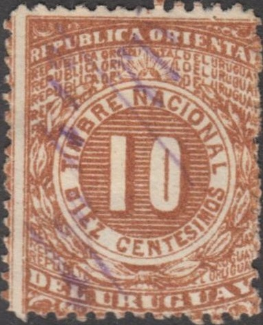

{kind=link}


Note: on my website many of the
pictures can not be seen! They are of course present in the
catalogue;
contact me if you want to purchase it.
(Reduced size)
Many stamps were overprinted 'OFICIAL' manually to be used as official stamps, examples:


(Stamps of 1889 and 1897 with 'OFICIAL' overprint)
The overprint can be found inverted quite easily.

1 c green
From 1901 onwards security holes were applied, examples:
(Reduced sizes)
These overprints have been forged by Fournier, examples of these forged overprints from a Fournier Album (probably used on genuine basic stamps):
(Reduced sizes)
(Reduced sizes)
2 c brown 5 c blue 8 c black 20 c brown 23 c lilac 50 c orange 1 P red
From 1915 onwards postage stamps were used again, with overprint 'Oficial' (in fancy letters).
1 c green 2 c red 3 c brown (1922) 4 c violet 6 c brown (1913) 10 c blue 20 c yellow Overprinted 'PROVISORIO UN cent'mo' (1904) 1 c on 10 c blue
These stamps were not sold to the public unused.
Smaller sized stamp, issued in 1922.
1 c bluish-green (dark or light shades) 1 c greyish-green (1936) 2 c red 3 c red-brown (two color shades were issued) 4 c violet 5 c blue 6 c brown (two types '6' different) 10 c green (two shades of green were issued)
The values 5 c black on yellow, 10 c black on blue, 20 c black on red, 30 c black on green, 50 c black on blue and 1 P black on orange exist both with inscription 'INTERIOR' and 'EXTERIOR'.
Later parcel post stamps, example of 1927:
Special delivery stamps have the inscription 'MENSAJERIAS', the first stamp was issued in 1921, examples:
Examples:
(Reduced sizes)
Many fiscal stamps exist for Uruguay.

1875, inscription "REPUBLICA ORIENTAL DEL URUGUAY TIMBRE
NACIONAL" 32 values were issued ranging from 10 c brown (see
image above) to $45 green.
Example of a 'REGISTRO DEL ESTADO CIVIL' 25 c green stamp issued in 1892:
{kind=link}